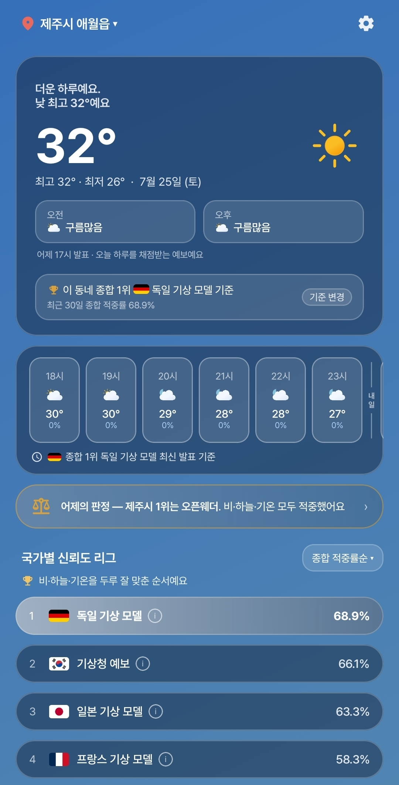
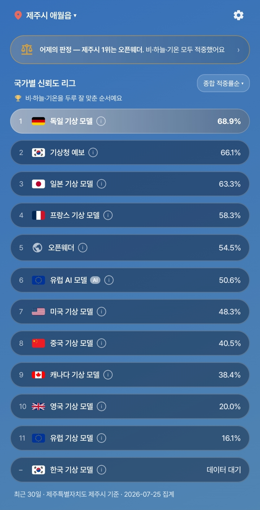
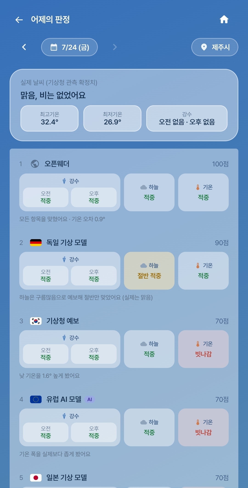

웨더리그
우리 동네에서 경쟁하는 전 세계 일기예보
우리 동네에서 누가
날씨를 제일 잘 맞출까요?
전 세계 기상청 모델과 기상청 예보를 매일 실제 날씨와 대조해 채점해요. 동네를 알려주시면 이 동네 1위 채널 기준으로 날씨를 브리핑해 드릴게요.



리그
국가별 신뢰도 리그
세계 각국의 기상 모델 12개 채널이 우리 동네 적중률(%)로 매일 순위를 겨뤄요. 지역마다 챔피언이 달라요.
판정
어제의 판정
어제 예보를 실제 관측과 대조해 비 오전·오후, 하늘, 기온까지 적중·빗나감을 날마다 공개해요.
브리핑
아침·저녁 브리핑
정한 시각에 이 동네 1위 채널 기준으로 하루 날씨를 알려드려요. 우산이 필요한 날엔 미리 챙겨 드릴게요.
위젯
홈 화면 위젯
지금 기온과 오늘의 흐름을 홈 화면에서 바로. 1위 채널이 바뀌면 위젯도 함께 바뀌어요.